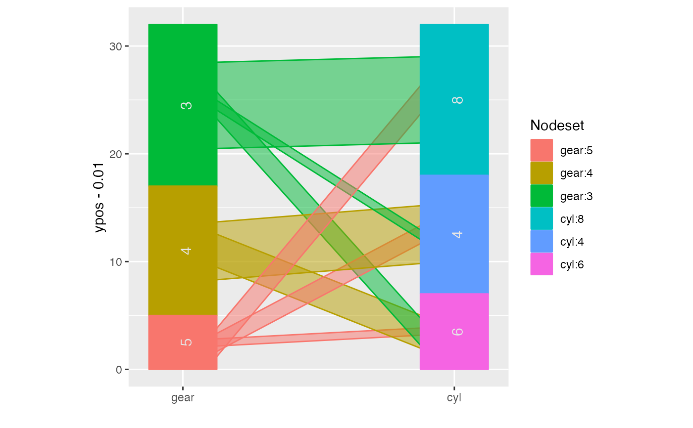
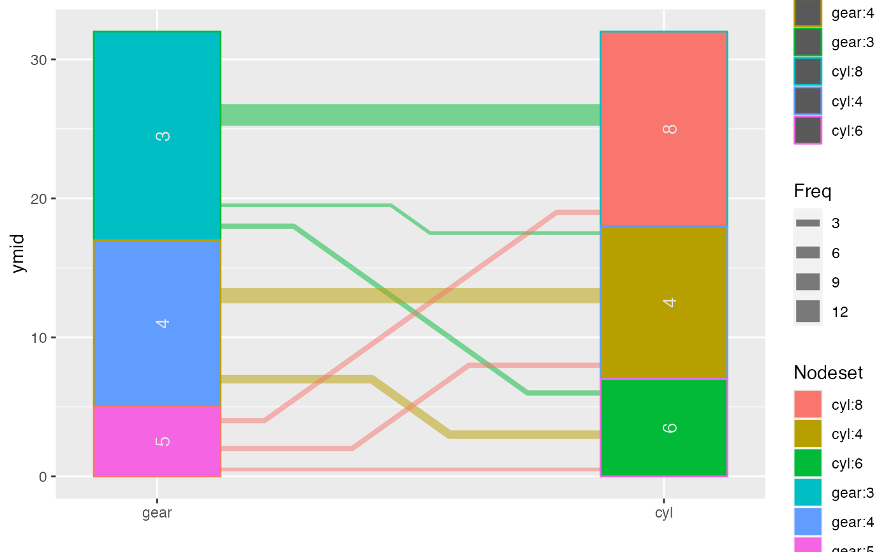

ggparallel implements and combines different types of parallel
coordinate plots for categorical data: hammock plots, parallel sets plots,
common angle plots, and common angle plots with a hammock-like adjustment
for line widths.
ggparallel(
vars = list(),
data,
weight = NULL,
method = "angle",
alpha = 0.5,
width = 0.25,
order = 1,
ratio = NULL,
asp = NULL,
label = TRUE,
label.colour = "grey90",
label.size = 4,
text.angle = 90,
text.offset = NULL,
same.level = FALSE,
...
)list of variable names to be included in the plotting. Order of the variables is preserved in the display
data frame
weighting variable - use character string
plotting method to use - one of angle,
adj.angle, parset, or hammock, for a hammock plot
the aspect ratio needs to be fixed.
level of alpha blending for the fill color in ribbons, value has to be between 0 and 1, defaults to 0.5.
width of variables
flag variable with three levels -1, 0, 1 for levels in decreasing order, levels in increasing order and levels unchanged. This variable can be either a scalar or a vector
used for methods with angle adjustments (method =
'hammock', 'adj.angle'): specifies the height (width for horizontal
displays) of the widest line as ratio of the overall display height (width
for horizontal displays).
aspect ratio of the plot - it will be set to a default of 1 in the case of hammock plots.
binary variable (vector), whether labels should be shown.
character of colour in which the label should be shown. Ignored, if `label` is FALSE.
numeric value to determine the size in which labels are shown, defaults to 4
numeric value to determine the angle under which labels are shown.
(vector) of values for offsetting the labels
are all variables using the same levels? If yes, simplify the labelling
passed on directly to all of the ggplot2 commands
returns a ggplot2 object that can be plotted directly or used as base layer for additional modifications.
Parallel sets have been suggested by kosara:2006 as a visualization technique to incorporate categorical variables into a parallel coordinate plot introduced by wegman:1990 and inselberg:1985. The parallel sets implemented here are reduced to representations of neighboring two-dimensional relationships only rather than the hierarchical version originally suggested.
Both versions, however, show perceptual problems with interpreting line widths, leading to potentially wrong conclusions about the data. The hammock display, introduced by schonlau:2003, and the common angle plots are two approaches at fixing this problem: in Hammock plots the linewidth is adjusted by a factor countering the strength of the illusion, in the common angle plot all lines are adjusted to show the same angle - making line widths again comparable across ribbons.
Additionally, we can also adjust ribbons in the common angle display for the
angle, to make them appear having the same width (or height) across the
display. We refer to this method as adj.angle.
data(mtcars)
ggparallel(list("gear", "cyl"), data=mtcars)
ggparallel(list("gear", "cyl"), data=mtcars, method="hammock", ratio=0.25)

require(RColorBrewer)
require(ggplot2)
cols <- c(brewer.pal(4, "Reds")[-1], brewer.pal(4, "Blues")[-1])
ggparallel(list("gear", "cyl"), ratio=0.2, data=mtcars,
method="hammock", text.angle=0) +
scale_fill_manual(values=cols) + scale_colour_manual(values=cols) +
theme_bw()
## combination of common angle plot and hammock adjustment:
ggparallel(list("gear", "cyl"), data=mtcars, method="adj.angle",
ratio=2)

## compare with method='parset'
ggparallel(list("gear", "cyl"), data=mtcars, method='parset')
## flip plot and rotate text
ggparallel(list("gear", "cyl"), data=mtcars, text.angle=0) +
coord_flip()
## change colour scheme
ggparallel(list("gear", "cyl"), data=mtcars, text.angle=0) +
coord_flip() +
scale_fill_brewer(palette="Set1") +
scale_colour_brewer(palette="Set1")
## example with more than two variables:
titanic <- as.data.frame(Titanic)
ggparallel(names(titanic)[c(1,4,2,1)], order=0, titanic, weight="Freq") +
scale_fill_brewer(palette="Paired", guide="none") +
scale_colour_brewer(palette="Paired", guide="none")
#> Warning: attributes are not identical across measure variables; they will be dropped
if (FALSE) {
cols <- c(brewer.pal(5,"Blues")[-1], brewer.pal(3, "Oranges")[-1],
brewer.pal(3, "Greens")[-1])
ggparallel(names(titanic)[c(1,4,2,1)], order=0, titanic, weight="Freq") +
scale_fill_manual(values=cols, guide="none") +
scale_colour_manual(values=cols, guide="none") + theme_bw()
## hammock plot with same width lines
ggparallel(names(titanic)[c(1,4,2,3)], titanic, weight=1, asp=0.5,
method="hammock", ratio=0.2, order=c(0,0)) +
theme( legend.position="none") +
scale_fill_brewer(palette="Paired") +
scale_colour_brewer(palette="Paired")
## hammock plot with line widths adjusted by frequency
ggparallel(names(titanic)[c(1,4,2,3)], titanic, weight="Freq",
asp=0.5, method="hammock", order=c(0,0), text.angle=0,
width=0.45) +
theme( legend.position="none")
## biological examples: genes and pathways
data(genes)
cols <- c(rep("grey80", 24), brewer.pal("YlOrRd", n = 9))
genes$chrom <- factor(genes$chrom, levels=c(paste("chr", 1:22, sep=""), "chrX", "chrY"))
ggparallel(list("path", "chrom"), text.offset=c(0.03, 0,-0.03),
data = genes, width=0.1, order=c(1,0), text.angle=0,
color="white",
factorlevels = c(sapply(unique(genes$chrom), as.character),
unique(genes$path))) +
scale_fill_manual(values = cols, guide="none") +
scale_colour_manual(values = cols, guide="none") +
coord_flip()
}
data(Titanic)
titanic <- as.data.frame(Titanic)
titanic$SexSurvived <- with(titanic, interaction(Sex, Survived))
titanic$SexClassSurvived <- with(titanic, interaction(Sex,Class, Survived))
ggparallel(vars=list("Survived", "SexSurvived", "SexClassSurvived"), weight="Freq", data=titanic) +
theme(legend.position="none") +
scale_fill_manual(values = rep(c("Orange", "Steelblue"), 14)) +
scale_colour_manual(values = rep(c("Orange", "Steelblue"), 14))
###########
p1 <- ggparallel(vars=list("Survived", "SexSurvived", "SexClassSurvived"),
weight="Freq", data=titanic, label = FALSE) +
theme(legend.position="none") +
scale_fill_manual(values = rep(c("Orange", "Steelblue"), 14)) +
scale_colour_manual(values = rep(c("Orange", "Steelblue"), 14))
p2 <- ggparallel(vars=list("Survived", "SexSurvived", "SexClassSurvived"),
weight="Freq", data=titanic, label = TRUE) +
theme(legend.position="none") +
scale_fill_manual(values = rep(c("Orange", "Steelblue"), 14)) +
scale_colour_manual(values = rep(c("Orange", "Steelblue"), 14))
ggplot_build(p2)$data[[4]]
#> x y label PANEL group colour size angle hjust vjust alpha
#> 1 1.01 355.49 Yes 1 -1 grey90 4 90 0.5 0.5 NA
#> 2 1.01 1455.99 No 1 -1 grey90 4 90 0.5 0.5 NA
#> 3 2.01 62.99 Female.No 1 -1 grey90 4 90 0.5 0.5 NA
#> 4 2.01 297.99 Female.Yes 1 -1 grey90 4 90 0.5 0.5 NA
#> 5 2.01 653.49 Male.Yes 1 -1 grey90 4 90 0.5 0.5 NA
#> 6 2.01 1518.99 Male.No 1 -1 grey90 4 90 0.5 0.5 NA
#> 7 3.01 1.49 Female.Crew.No 1 -1 grey90 4 90 0.5 0.5 NA
#> 8 3.01 4.99 Female.1st.No 1 -1 grey90 4 90 0.5 0.5 NA
#> 9 3.01 13.49 Female.2nd.No 1 -1 grey90 4 90 0.5 0.5 NA
#> 10 3.01 29.99 Female.Crew.Yes 1 -1 grey90 4 90 0.5 0.5 NA
#> 11 3.01 52.49 Male.2nd.Yes 1 -1 grey90 4 90 0.5 0.5 NA
#> 12 3.01 95.99 Male.1st.Yes 1 -1 grey90 4 90 0.5 0.5 NA
#> 13 3.01 170.99 Male.3rd.Yes 1 -1 grey90 4 90 0.5 0.5 NA
#> 14 3.01 259.99 Female.3rd.Yes 1 -1 grey90 4 90 0.5 0.5 NA
#> 15 3.01 351.49 Female.2nd.Yes 1 -1 grey90 4 90 0.5 0.5 NA
#> 16 3.01 450.99 Female.3rd.No 1 -1 grey90 4 90 0.5 0.5 NA
#> 17 3.01 562.99 Male.1st.No 1 -1 grey90 4 90 0.5 0.5 NA
#> 18 3.01 692.49 Female.1st.Yes 1 -1 grey90 4 90 0.5 0.5 NA
#> 19 3.01 839.99 Male.2nd.No 1 -1 grey90 4 90 0.5 0.5 NA
#> 20 3.01 1012.99 Male.Crew.Yes 1 -1 grey90 4 90 0.5 0.5 NA
#> 21 3.01 1319.99 Male.3rd.No 1 -1 grey90 4 90 0.5 0.5 NA
#> 22 3.01 1865.99 Male.Crew.No 1 -1 grey90 4 90 0.5 0.5 NA
#> family fontface lineheight
#> 1 1 1.2
#> 2 1 1.2
#> 3 1 1.2
#> 4 1 1.2
#> 5 1 1.2
#> 6 1 1.2
#> 7 1 1.2
#> 8 1 1.2
#> 9 1 1.2
#> 10 1 1.2
#> 11 1 1.2
#> 12 1 1.2
#> 13 1 1.2
#> 14 1 1.2
#> 15 1 1.2
#> 16 1 1.2
#> 17 1 1.2
#> 18 1 1.2
#> 19 1 1.2
#> 20 1 1.2
#> 21 1 1.2
#> 22 1 1.2
p1 + geom_text(aes(x = x, y=y, label = label), data = ggplot_build(p2)$data[[4]])